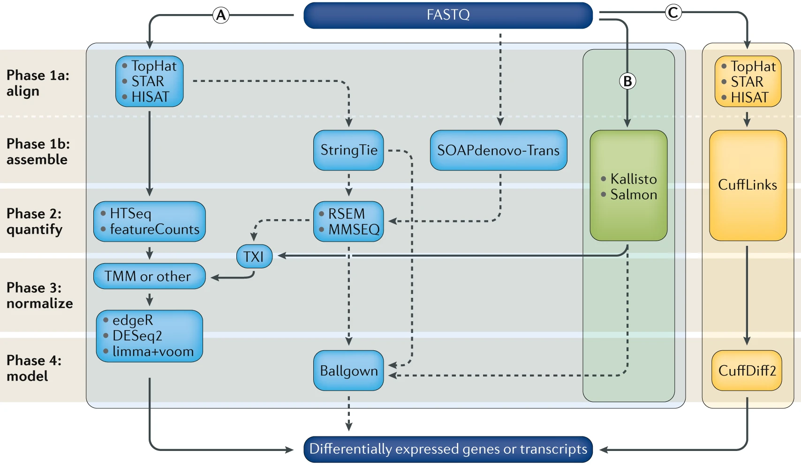

RNASeq Data Analysis¶
Introduction to RNA sequencing¶
High-throughput sequencing of mRNA (RNA-Seq) has become the standard methods for measuring and comparing the levels of gene expression in a wide variety of species and conditions. The RNA-seq method typically consists of identification of suitable biological samples (and replicates), isolation of total RNA, enrichment of non-ribosomal RNAs, conversion of RNA to cDNA, construction of a fragment library, sequencing on a high-throughput sequencing platform, generation of single or paired-end reads of 30–300 base pairs in length, alignment or assembly of these reads, and downstream analysis.
RNA-seq experiments must be analyzed with accurate, efficient software that is carefully designed to handle the very large sequencing volumes generated by most experiments. The data analysis pipelines can be conceptually divided into six steps.
Step 1: Evaluate and manipulate Raw data
Step 2: Map to reference, assess results
Step 3: Assemble transcripts
Step 4: Quantify transcripts
Step 5: Test for differential expression
Step 6: Visualize and perform other downstream analysis
I provided several RNA-seq pipelines with examples scripts using the recent software tools. All software have been installed on HTC cluster. If you need personalized consultation for RNASeq data analysis workflow and selection of better pipelines, please contact Dr. Fangping Mu at fangping@pitt.edu.

Computational analysis for differential gene expression (DGE) begins with raw RNA sequencing (RNA-seq) reads in FASTQ format and can follow a number of paths. Three popular workflows (A, B and C, represented by the solid lines) are given as examples, and some of the more common alternative tools (represented by the dashed lines) are indicated. In workflow A, aligners such as TopHat, STAR or HISAT2 use a reference genome to map reads to genomic locations, and then quantification tools, such as HTSeq and featureCounts, assign reads to features. After normalization (usually using methods embedded in the quantification or expression modelling tools, such as trimmed mean of M-values (TMM)) gene expression is modelled using tools such as edgeR, DESeq2 and limma+voom, and a list of differentially expressed genes or transcripts is generated for further visualization and interpretation. In workflow B, newer, alignment-free tools, such as Kallisto and Salmon, assemble a transcriptome and quantify abundance in one step. The output from these tools is usually converted to count estimates (using tximport (TXI)) and run through the same normalization and modelling used in workflow A, to output a list of differentially expressed genes or transcripts. Alternatively, workflow C begins by aligning the reads (typically performed with TopHat, although STAR and HISAT can also be used), followed by the use of CuffLinks to process raw reads and the CuffDiff2 package to output transcript abundance estimates and a list of differentially expressed genes or transcripts. Other tools in common use include StringTie, which assembles a transcriptome model from TopHat (or similar tools) before the results are passed through to RSEM or MMSEQ to estimate transcript abundance, and then to Ballgown157 to identify differentially expressed genes or transcripts, and SOAPdenovo-trans, which simultaneously aligns and assembles reads for analysis via the path of choice. Stark, R., Grzelak, M. & Hadfield, J. RNA sequencing: the teenage years. Nat. Rev. Genet. (2019). doi:10.1038/s41576-019-0150-2
Setting up¶
Since you are going to be working on our remote cluster, HTC, we first need to log in. Macs have a utility application called “Terminal” for performing tasks on the command line (shell), both locally and on remote machines. With Windows, You can also use Putty to log in to remote machines from Windows computers.
Type in the following command with your username to login:
ssh username@htc.crc.pitt.edu
A warning might pop up the first time you try to connect to a remote machine, type “Yes” or “Y”.
Once logged in, you should see the command prompt:
[fangping@login0b ~]$
Reference Genome¶
Reference genome - The nucleotide sequence of the chromosomes of a species. Genes are the functional units of a reference genome and gene annotations describe the structure of transcripts expressed from those gene loci.
Obtain a reference genome from Ensembl, UCSC, NCBI or iGenomes.
Ensembl Homo_sapiens GRCh38 reference genome and various indices have been installed at
/bgfs/genomics/refs/rnaseq_refs/Homo_sapiens/Ensembl/GRCh38
I will show you how to download the human GRCh38 version of the genome from Ensembl.
The complete data from which these files were obtained can be found at: ftp://ftp.ensembl.org/pub/release-100/fasta/homo_sapiens/dna/. You can find various Homo sapiens genome assembly. Which one should I use? The options available can be a bit overwhelming. 'dna' - unmasked genomic DNA sequences. 'dna_rm' - masked genomic DNA. Interspersed repeats and low complexity regions are detected with the RepeatMasker tool and masked by replacing repeats with 'N's. 'dna_sm' - soft-masked genomic DNA. All repeats and low complexity regions have been replaced with lowercase versions of their nucleic baseFor NGS data pipelines, you can choose "Homo_sapiens.GRCh38.dna.primary_assembly.fa.gz" or "Homo_sapiens.GRCh38.dna_sm.primary_assembly.fa.gz" from Ensembl. The files with "sm" in the name are "soft masked" which means instead of the repeat regions being given Ns, they are converted to lower-case. These are OK to use because most major aligners recognize lower-case letters as valid bases. Primary assembly contains all toplevel sequence regions excluding haplotypes and patches. This file is best used for performing sequence similarity searches where patch and haplotype sequences would confuse analysis.
Note
DO NOT use 'dna_rm' files as your reference genome.
File names with Toplevel contains all sequence regions flagged as toplevel in an Ensembl schema. This includes chromosomes, regions not assembled into chromosomes and N padded haplotype/patch regions. DO NOT use these files as your reference genome.
You could use wget to download the Homo_sapiens.GRCh38.dna_sm.primary_assembly.fa.gz file, then unzip/untar.
cd /bgfs/genomics/refs/rnaseq_refs/Homo_sapiens/Ensembl # you cannot write to this folder, go to your group's bgfs folder
mkdir GRCh38
cd GRCh38
wget ftp://ftp.ensembl.org/pub/release-100/fasta/homo_sapiens/dna/Homo_sapiens.GRCh38.dna.primary_assembly.fa.gz
gunzip Homo_sapiens.GRCh38.dna.primary_assembly.fa.gz
Instead of the above, you might consider getting reference genomes and associated annotations from UCSC http://hgdownload.cse.ucsc.edu/goldenPath/hg38/bigZips/
wget <a href="https://hgdownload.cse.ucsc.edu/goldenPath/hg38/bigZips/hg38.fa.gz" title="https://hgdownload.cse.ucsc.edu/goldenPath/hg38/bigZips/hg38.fa.gz">https://hgdownload.cse.ucsc.edu/goldenPath/hg38/bigZips/hg38.fa.gz</a>
gunzip hg38.fa.gz
If I cannot find primary assembly for my species, how should I proceed?¶
For example, ensembl pig genome assembly (ftp://ftp.ensembl.org/pub/release-92/fasta/sus_scrofa/dna/ ) does not have the primary assembly. For this case, you need to build your own reference genome from chromosomes.
Download "Sus_scrofa.Sscrofa11.1.dna.chromosome.*.fa.gz" from emsembl ftp site. Replace * with 1-18, MT, X, Y and non-chromosomal. Unzip all files and concatenate them to generate the primary assembly.
cat Sus_scrofa.Sscrofa11.1.dna.chromosome.*.fa > Sscrofa11.fasta
Annotation¶
Gene annotations - Descriptions of gene/transcript models for a genome. A transcript model consists of the coordinates of the exons of a transcript on a reference genome. Additional information such as the strand the transcript is generated from, gene name, coding portion of the transcript, alternate transcript start sites, and other information may be provided. GTF (.gtf) file is a common file format referred to as Gene Transfer Format used to store gene and transcript annotation information.
To obtain known gene/transcript annotations, you can use Ensembl (https://useast.ensembl.org/info/data/ftp/index.html) or UCSC.
Use ENSEMBL FTP SITE¶
Use the following commands to download Ensembl release 100 Homo sapiens GRCh38 gene annotation.
wget <a href="ftp://ftp.ensembl.org/pub/release-100/gtf/homo_sapiens/Homo_sapiens.GRCh38.100.gtf.gz" title="ftp://ftp.ensembl.org/pub/release-100/gtf/homo_sapiens/Homo_sapiens.GRCh38.100.gtf.gz">ftp://ftp.ensembl.org/pub/release-100/gtf/homo_sapiens/Homo_sapiens.GRCh38.100.gtf.gz</a>
gunzip Homo_sapiens.GRCh38.100.gtf.gz
Use UCSC TABLE BROWSER¶
Based on UCSC annotations or several other possible annotation sources collected by UCSC. You might choose this option if you want to have a lot of flexibility in the annotations you obtain.
- Open the following in your browser: https://genome.ucsc.edu/
- Select 'Tools' and then 'Table Browser' at the top of the page.
- Select 'Mammal', 'Human', and 'Dec. 2013 (GRCh38/hg38)' from the first row of drop down menus.
- Select 'Genes and Gene Predictions' and 'GENCODE v24' from the second row of drop down menus.
- Select ‘knownGene’ from the third row of drop down menus. Select ‘genome’ from the fourth row.
- Select 'GTF - gene transfer format' for output format and enter 'hg38_UCSC_Genes.gtf' for output file.
- Hit the 'get output' button and save the file. Make note of its location.
Important note on chromosome naming conventions¶
In order for your RNA-seq analysis to work, the chromosome names in your .gtf file must match those in your reference genome (i.e. your reference genome fasta file). Unfortunately, Ensembl, NCBI, and UCSC can not agree on how to name the chromosomes in many species, so this problem may come up often. You can avoid this by getting a complete reference genome and gene annotation package from the same source (e.g., Ensembl) to maintain consistency.
Important note on reference genome builds¶
Your annotations must correspond to the same reference genome build as your reference genome fasta file. e.g., both correspond to UCSC human build 'hg38', NCBI human build 'GRCh38', etc. Even if both your reference genome and annotations are from UCSC or Ensembl they could still correspond to different versions of that genome. This would cause problems in any RNA-seq pipeline.
There are several commons sources to obtain the reference genome, each with minor (but important differences). The following summarizes some of the commonly selected options and notes and distinguishing features (e.g. use of ‘chr’ in chromosome names, naming style for unplaced contigs, inclusion of alternative haplotype sequences, use and nature of “decoy” sequences, use of lowercase to indicate repeat elements in the genome, etc.).
| Name (link) | Description |
|---|---|
| 1000 Genomes reference | Used in this course. The 1000g reference names chromosomes as follows (chr1, chr2, .., chr22, chrX, chrY, chrM). This reference includes “decoy” sequences (mostly low complexity sequences) that have been added to the standard genome build sequence. This reduces misalignment of reads that would otherwise get placed somewhere they don’t belong. The developer of the BWA aligner documents use of this version of the reference genome. This reference includes the alternative contigs. |
| Ensembl reference | Ensembl names the chromosomes as follows (1, 2, .., 22, X, Y, MT). The names of some unplaced contigs also differ. This reference does NOT have the decoy sequences. This reference includes the alternative contigs. |
| UCSC reference | The UCSC reference names chromosomes as follows (chr1, chr2, .., chr22, chrX, chrY, chrM). This reference does NOT have the decoy sequences. This reference includes the alternative contigs. |
| NCBI reference | NCBI names the chromosomes as follows (chr1, chr2, .., chr22, chrX, chrY, chrMT). This reference does NOT include the decoy sequences. This reference includes the alternative contigs. The major annotation centers such as UCSC and Ensembl start with raw files from NCBI (Various Human Assemblies). Most other people do not use these NCBI files directly but rather get a version of the files from UCSC, Ensembl, etc. |
| Genomic Data Commons (GDC) reference | The GDC reference names chromosomes as follows (chr1, chr2, .., chr22, chrX, chrY, chrM). The GDC created their own version of the reference for harmonized analysis of the TCGA and other large cancer sequencing projects. This reference includes “decoy” sequences. This reference does NOT include the alternative contigs. Unique to this reference is the inclusion of several virus sequences for viruses with known or suspected roles in cancer (e.g. HPV, EBV, etc.). |
Indexing¶
Within your ‘ref’ directory, there are two files ‘Homo_sapiens.GRCh38.dna.primary_assembly.fa’ and ‘Homo_sapiens.GRCh38.100.gtf’.
All aligners require the reference sequence to be indexed -- this is a process that creates additional files that describe the reference file, such as where each chromosome is located in the file. Knowing this information speeds up alignment.
In this step, user supplied the reference genome sequences (FASTA file) and annotations (GTF file), from which aligner generate genome indexes that are utilized in the mapping step. The genome indexes are saved to disk and need only be generated once for each genome/annotation combination.
At each aligner’s website, a limited collection of genome indexes is available. For example, STAR (http://labshare.cshl.edu/shares/gingeraslab/www-data/dobin/STAR/STARgeno...), HISAT2 (https://ccb.jhu.edu/software/hisat2/index.shtml), however, it is strongly recommended that users generate their own genome indexes with most up-to-date assemblies and annotations.
Consult aligner manual to generate genome indexes. Provided is an example to generate HISAT2 indexes for Homo_sapiens.GRCh38.86 genome and annotation.
Extract splice sites and exons from GRCh38.86 annotation file. Run the following command on HTC login node.
Phantom-Macbook-Pro:~ fangping$ ssh fangping@htc.crc.pitt.edu
fangping@htc.crc.pitt.edu's password:
Last login: Mon Jul 13 15:49:23 2020 from 10.25.0.128
[fangping@login0b ~]$ cd /bgfs/genomics/refs/rnaseq_refs/Homo_sapiens/Ensembl/GRCh38 # go to your refs folder
[fangping@login0b GRCh38]$ module load hisat2/2.2.0
[fangping@login0b GRCh38]$ extract_splice_sites.py Homo_sapiens.GRCh38.100.gtf > grch38.ss
[fangping@login0b GRCh38]$ extract_exons.py Homo_sapiens.GRCh38.100.gtf > grch38.exon
Type ls, you can find two new files grch38.ss and grch38.ss
[fangping@login0b GRCh38]$ ls grch38.*
grch38.exon grch38.ss
To build HISAT2 index, you need to submit the following slurm job to HTC cluster.
#!/bin/bash
#
#SBATCH --job-name=hisat2_index
#SBATCH -N 1 # Ensure that all cores are on one machine
#SBATCH -t 3-00:00 # Runtime in D-HH:MM
#SBATCH --cpus-per-task=16 # Request that ncpus be allocated per process.
#SBATCH --mem=230g # Memory pool for all cores (see also --mem-per-cpu)
#SBATCH --output=hisat2_build.out
module load hisat2/2.2.0
hisat2-build -p 16 --ss grch38.ss --exon grch38.exon Homo_sapiens.GRCh38.dna.primary_assembly.fa grch38_tran
Note
WARNING: In order to index the entire human genome, HISAT2 requires at least 160GB of RAM, and several hours.
To create or edit files we will need to use a text editor. When working remotely, we need a text editor that functions from the command line interface. Within these editors, since you cannot ‘point-and-click’, you must navigate the interface using the arrow keys and shortcuts.
While there are simpler editors available for use (i.e. nano), most computational scientists tend to favor editors that have greater functionality. Some popular editors include Emacs, Vim, or a graphical editor such as Gedit. These are editors which are generally available for use on high-performance compute clusters. You can use nano to generate slurm job script.
[fangping@login0b GRCh38]$ nano hisat2_build.sbatch
Copy the above job script, and paste to the screen (Command + v). Ctrl + o to write to the file, and then Ctrl + x to exit.
To submit the job to the HTC cluster.
[fangping@login0b GRCh38]$ sbatch hisat2_build.sbatch
Submitted batch job 1058651
This job can take several hours. When the job is finished, you should find eight files named grch38_tran.1.ht2 to grch38_tran.8.ht2 with the ref directory. These are the HISAT2 index files.
STAR is a splice-aware aligner that will produce gapped alignments to handle reads that span exon-intron junctions. Thus, it is only appropriate when an annotated reference genome is available. To build STAR index, submit the following slurm job to HTC cluster.
#!/bin/bash
#
#SBATCH --job-name=STAR_index
#SBATCH -N 1 # Ensure that all cores are on one machine
#SBATCH -t 3-00:00 # Runtime in D-HH:MM
#SBATCH --cpus-per-task=16 # Request that ncpus be allocated per process.
#SBATCH --mem=230g # Memory pool for all cores (see also --mem-per-cpu)
#SBATCH --output=star_index.out
module load star/2.7.5a
mkdir -p grch38_star_index_2.7.5a
STAR --runMode genomeGenerate --runThreadN 16 \
--genomeDir ./grch38_star_index_2.7.5a/ \
--genomeFastaFiles Homo_sapiens.GRCh38.dna.primary_assembly.fa \
--sjdbGTFfile Homo_sapiens.GRCh38.100.gtf
RNA-seq Data¶
The test data consists of 6 RNA-seq samples from the following paper.
Pulikkan JA, Hegde M, Ahmad HM, Belaghzal H et al. CBFβ-SMMHC Inhibition Triggers Apoptosis by Disrupting MYC Chromatin Dynamics in Acute Myeloid Leukemia. Cell 2018 Jun 28;174(1):172-186.e21. PMID: 29958106
In the experiment, ME-1 cells were treated with DMSO/ AI-10-49 (1uM) for six hours, followed by RNA isolation. RNA libraries were sequenced using 90bp paired end reads on an Illumina HiSeqTM 2000.Three independent experiments were conducted for DMSO as well as AI-10-49 treatments. For more description of the experiment see the PubMed entry 29958106 and for raw data see the GEO entry GSE101788.
https://www.ncbi.nlm.nih.gov/geo/query/acc.cgi?acc=GSE101788
Click the above link and click “SRA Run Selector” at the bottom. Click "Accession List" to download SRR_Acc_List.txt and "Metadata" to download SraRunTable.txt
You can download the FASTQ files from the Sequence Read Archive, the identifiers would be SRA run IDs, e.g. SRR5861494. You should have two files for a paired-end experiment for each ID, SRR5861494_1.fastq.gz and SRR5861494_2.fastq.gz, which give the first and second read for the paired-end fragments.
cd /bgfs/genomics/fangping/RNASeq # go to a folder
mkdir fastqs
Choose a method from this managing and moving data and transfer the SRR_Acc_List.txt and SraRunTable.txt from your computer to the new folder.
To extract fastq files from the GEO data, use NCBI's program toolkit. It's already installed on HTC cluster and can be loaded with module load sra-toolkit/2.10.8. Default configuration of sra-toolkit will use your home directory ~/ncbi as your download/cache area for downloaded files and references. Your home directory has 75GB quota.
You should run the configuration tool to set up your download/cache are.
[fangping@login0b fastqs]$ module load sra-toolkit/2.10.8
[fangping@login0b fastqs]$ vdb-config -i # run this command once
The fastq-dump command produces two compressed fastq files for each dataset, for the forward and reverese reads. Within your fastqs folder, generate a text file fastq_dump.sbatch with the following contents. Then submit the job to the HTC cluster.
sbatch fastq_dump.sbatch
[fangping@login0b fastqs]$ cat fastq_dump.sbatch
#!/bin/bash
#
#SBATCH --job-name=fastq_dump
#SBATCH -N 1
#SBATCH --cpus-per-task=1 # Request that ncpus be allocated per process.
#SBATCH -t 1-00:00 # Runtime in D-HH:MM
#SBATCH --output=fastq_dump-%A_%a.out
#SBATCH --array=0-5 # job array index
module load sra-toolkit/2.10.8
names=($(cat SRR_Acc_List.txt))
echo ${names[${SLURM_ARRAY_TASK_ID}]}
prefetch ${names[${SLURM_ARRAY_TASK_ID}]}
vdb-validate ${names[${SLURM_ARRAY_TASK_ID}]}
fastq-dump --split-e --origfmt --gzip ${names[${SLURM_ARRAY_TASK_ID}]}
Check fastq-dump options at https://ncbi.github.io/sra-tools/fastq-dump.html.
You can also run "fastq-dump -h" to check options. --split-e 3-way splitting for mate-pairs. For each spot, if there
are two biological reads satisfying filter conditions, the first is placed in the *_1.fastq file, and the second is
placed in the *_2.fastq file. If there is only one biological read satisfying the filter conditions, it is placed in
the *.fastq file.All other reads in the spot are ignored. --origfmt Defline contains only original sequence name.
--gzip Compress output using gzip.
This job uses job array to submit and manage collections of similar jobs quickly and easily. Refer to this documentation.
Your own data¶
If you received your own data, contact the data provider to understand whether the data is paired-end or single-end sequencing reads, strand-specific or non-strand-specific RNAseq. Common preprocessing tasks are listed below.
Unzip fastq.gz to fastq files.
gunzip filename.fastq.gz
Merge multilanes fastq files.
cat 1_S1_L001_R1_001.fastq 1_S1_L002_R1_001.fastq 1_S1_L003_R1_001.fastq 1_S1_L004_R1_001.fastq > 1_R1.fastq
or
zcat 1_L001_R1_001.fastq.gz 1_L002_R1_001.fastq.gz 1_L003_R1_001.fastq.gz 1_L004_R1_001.fastq.gz | gzip > 1_R1.fastq.gz
Convert fastq file to fastq.gz file.
gzip 1_R1.fastq
If you have many samples to merge, job arrays are recommended. For example, the following batch job merge 10 four lanes samples.
#!/bin/bash
#
#SBATCH --job-name=cat
#SBATCH -N 1
#SBATCH --cpus-per-task=1 # Request that ncpus be allocated per process.
#SBATCH -t 1-00:00 # Runtime in D-HH:MM
#SBATCH --output=cat-%A_%a.out
#SBATCH --array=1-10 # job array index
zcat ${SLURM_ARRAY_TASK_ID}_L001_R1_001.fastq.gz ${SLURM_ARRAY_TASK_ID}_L002_R1_001.fastq.gz ${SLURM_ARRAY_TASK_ID}_L003_R1_001.fastq.gz ${SLURM_ARRAY_TASK_ID}_L004_R1_001.fastq.gz | gzip > ${SLURM_ARRAY_TASK_ID}_R1.fastq.gz
PreAlignment QC¶
To get a sense of your data quality before alignment, FastQC provides a simple way to do some quality control checks on raw sequence data coming from high throughput sequencing pipelines. Video tutorial of FastQC
Under your RNASeq folder, there is a single folder fastqs. Let's create two folder jobs and results.
[fangping@login0b RNASeq]$ mkdir jobs
[fangping@login0b RNASeq]$ mkdir results
[fangping@login0b RNASeq]$ ls
fastqs jobs results
You can write your jobs scripts in jobs folder:
cd jobs
Submit the following batch job to run FastQC on your fastq files
[fangping@login0b jobs]$ cat 1.fastqc.sbatch
#!/bin/bash
#
#SBATCH --job-name=fastqc
#SBATCH -c 1
#SBATCH -t 1-00:00 # Runtime in D-HH:MM
#SBATCH --output=fastqc-%A_%a.out
#SBATCH --array=0-5 # job array index
module purge
module load fastqc/0.11.9
names=($(cat ../fastqs/SRR_Acc_List.txt))
echo ${names[${SLURM_ARRAY_TASK_ID}]}
mkdir -p ../results/fastqc
fastqc -o ../results/fastqc ../fastqs/${names[${SLURM_ARRAY_TASK_ID}]}_1.fastq.gz
fastqc -o ../results/fastqc ../fastqs/${names[${SLURM_ARRAY_TASK_ID}]}_2.fastq.gz
[fangping@login0b jobs]$ sbatch 1.fastqc.sbatch # submit the job
You can download the *_fastqc.html files within ../results/fastqc to view the FastQC report. You can also use the interactive desktop on open ondemand to view the html files.
Trimming Adaptor¶
FastQC gave you warning when overrepresented sequences were in first 200,000 sequences. The overrepresented sequences can provide you the information which adaptors are used.
Here is the documentation of Illumina Adaptor Sequences: What sequences do I use for adaptor trimming?
Some third-party tools require the adapter sequence for trimming be specified separately. The recommended sequences to use for each Illumina kit are as follows.
TruSeq LT and TruSeq HT-based kits:
Read 1: AGATCGGAAGAGCACACGTCTGAACTCCAGTCA
Read 2: AGATCGGAAGAGCGTCGTGTAGGGAAAGAGTGT
ScriptSeq and TruSeq DNA Methylation:
Read 1: AGATCGGAAGAGCACACGTCTGAAC
Read 2: AGATCGGAAGAGCGTCGTGTAGGGA
TruSeq Small RNA:
TGGAATTCTCGGGTGCCAAGG
TruSeq Ribo Profile:
AGATCGGAAGAGCACACGTCT
AmpliSeq, Nextera, Nextera DNA Flex, Nextera DNA, Nextera XT, Nextera Enrichment, Nextera Rapid Capture Enrichment, TruSight Enrichment, TruSight Rapid Capture Enrichment, TruSight HLA:
CTGTCTCTTATACACATCT
Nextera Mate Pair:
CTGTCTCTTATACACATCT+AGATGTGTATAAGAGACAG
Here is a documentation to De-Mystify Illumina TruSeq DNA Adapters
Trim Galore! is a wrapper script to automate quality and adapter trimming as well as quality control. Trim Galore! will analyse the first 1 million sequences of the first specified file and attempt to find the first 12 or 13bp of the following standard adapters:
Illumina: AGATCGGAAGAGC
Small RNA: TGGAATTCTCGG
Nextera: CTGTCTCTTATA
If no adapter can be detected within the first 1 million sequences Trim Galore defaults to --illumina. The auto-detection behaviour can be overruled by specifying an adapter sequence manually or by using --illumina, --nextera or --small_rna.
You can use the following job arrays to trim adaptors from the 6 samples. The sample names are listed in file ../fastqs/SRR_Acc_List.txt.
[fangping@login0b jobs]$ cat 2.trim.sbatch
#!/bin/bash
#
#SBATCH --job-name=trim
#SBATCH -c 1
#SBATCH -t 1-00:00 # Runtime in D-HH:MM
#SBATCH --output=trim-%A_%a.out
#SBATCH --array=0-5 # job array index
module load trimgalore/0.6.5
names=($(cat ../fastqs/SRR_Acc_List.txt))
echo ${names[${SLURM_ARRAY_TASK_ID}]}
mkdir -p ../results/trim_galore
trim_galore --paired \
--output_dir ../results/trim_galore \
../fastqs/${names[${SLURM_ARRAY_TASK_ID}]}_1.fastq.gz \
../fastqs/${names[${SLURM_ARRAY_TASK_ID}]}_2.fastq.gz
When the job is completed, check the naming patterns of trim_galore results in ../results/trim_galore folder.
Cutadapt is tool specifically designed to remove adapters from NGS data. To see the full list of help and options, read this document
For paired-end data containing Illumina TruSeq adapters, the command line looks as follows:
cutadapt \
-a AGATCGGAAGAGCACACGTCTGAACTCCAGTCA -A AGATCGGAAGAGCGTCGTGTAGGGAAAGAGTGT \
-o trimmed.1.fastq.gz -p trimmed.2.fastq.gz \
reads.1.fastq.gz reads.2.fastq.gz
To run on HTC cluster, submit the following job.
#!/bin/bash
#
#SBATCH --job-name=cutadapt
#SBATCH -n 1
#SBATCH -t 1-00:00 # Runtime in D-HH:MM
#SBATCH --output=cutadapt.out
module load cutadapt/1.18
cutadapt -a AGATCGGAAGAGCACACGTCTGAACTCCAGTCA -A AGATCGGAAGAGCGTCGTGTAGGGAAAGAGTGT -o SRR1039508_1.trimmed.fastq.gz -p SRR1039508_2.trimmed.fastq.gz SRR1039508_1.fastq.gz SRR1039508_2.fastq.gz
The output of this step will be trimmed FASTQ files for each data set.
Comments¶
http://www.ecseq.com/support/ngs/trimming-adapter-sequences-is-it-necessary
Adapter contamination will lead to NGS alignment errors and an increased number of unaligned reads, since the adapter sequences are synthetic and do not occur in the genomic sequence. There are applications (e.g. small RNA sequencing) where adapter trimming is highly necessary. With a fragment size of around 24 nucleotides, one will definitely sequence into the 3' adapter. But there are also applications (transcriptome sequencing, whole genome sequencing, etc.) where adapter contamination can be expected to be so small (due to an appropriate size selection) that one could consider to skip the adapter removal and thereby save time and efforts.
Alignment¶
Alignment is the process of taking the short reads from the FASTQ and places them in the correct location in the genome. However, there exist a variety of aligners that will accomplish this goal. Two major types of aligners are non-splice aware aligner (e.g., BWA, Bowtie, etc) and splice aware aligner (e.g., STAR, HISAT2, etc). To align human RNA-seq data to human genome, splice aware aligner is required. All the aligners are capable of taking advantage of multi-threading: splitting up the work of alignment across multiple cores.
HISAT2 alignment¶
HISAT2 is a fast and sensitive alignment program for mapping next-generation sequencing reads (whole-genome, transcriptome, and exome sequencing data) against the general human population (as well as against a single reference genome). HISAT2 uses a graph-based alignment and has succeeded HISAT and TOPHAT2. The output of this step will be a SAM/BAM file for each data set.
You can perform alignments with HISAT2 to the genome and transcriptome. Refer to HISAT2 manual for a more detailed explanation: https://ccb.jhu.edu/software/hisat2/manual.shtml
First, begin by making the appropriate reference genome directory. You can build your own reference genome. For this tutorial, you will generate a soft link to an existing GRCh38 reference genome that I have built.
[fangping@login0b RNASeq]$ cd results/
[fangping@login0b results]$ mkdir reference_genome
[fangping@login0b results]$ ln -s /bgfs/genomics/refs/rnaseq_refs/Homo_sapiens/Ensembl/GRCh38 GRCh38
Submit the following job to HTC cluster to align the RNA-seq data to the human genome. The job script 3.hisat2.sbatch
is under the jobs folder.
[fangping@login0b jobs]$ cat 3.hisat2.sbatch
#!/bin/bash
#
#SBATCH -N 1 # Ensure that all cores are on one machine
#SBATCH -t 3-00:00 # Runtime in D-HH:MM
#SBATCH -J hisat2_human_samples
#SBATCH --cpus-per-task=4 # Request that ncpus be allocated per process.
#SBATCH --mem=60g # Memory pool for all cores (see also --mem-per-cpu)
#SBATCH --output=hisat2-%A_%a.out
#SBATCH --array=0-5 # job array index
module purge
module load hisat2/2.2.0
names=($(cat ../fastqs/SRR_Acc_List.txt))
echo ${names[${SLURM_ARRAY_TASK_ID}]}
mkdir -p ../results/hisat2
hisat2 -p 4 --dta \
-x ../results/reference_genome/GRCh38/grch38_tran \
-1 ../results/trim_galore/${names[${SLURM_ARRAY_TASK_ID}]}_1_val_1.fq.gz \
-2 ../results/trim_galore/${names[${SLURM_ARRAY_TASK_ID}]}_2_val_2.fq.gz \
-S ../results/hisat2/${names[${SLURM_ARRAY_TASK_ID}]}.sam
Options specified as follows:
- '-p 4' tells HISAT2 to use 4 CPUs for bowtie alignments.
- '--rna-strandedness RF' specifies strandedness of RNAseq library. You can specify RF if the TruSeq strand-specific library was used to make the sequences. See here for options. https://github.com/griffithlab/rnaseq_tutorial/blob/master/manuscript/su...
- '--dta' Reports alignments tailored for transcript assemblers.
- '-x /path/to/hisat2/index' The HISAT2 index filename prefix (minus the trailing .X.ht2) built earlier including splice sites and exons.
- '-1 /path/to/read1.fastq.gz' The read 1 FASTQ file, optionally gzip(.gz) or bzip2(.bz2) compressed.
- '-2 /path/to/read2.fastq.gz' The read 2 FASTQ file, optionally gzip(.gz) or bzip2(.bz2) compressed.
- '-S /path/to/output.sam' The output SAM format text file of alignments.
HISAT2 generates a summary of the alignments, which is in file hisat2.out (specified as #SBATCH --output=hisat2.out). Notice the number of total reads, reads aligned and various metrics regarding how the reads aligned to the reference.
STAR alignment¶
To use STAR to map reads to the genome, create a directory mkdir STAR_alignment and submit the following jobs.
[fangping@login0b jobs]$ cat 3.star.sbatch
#!/bin/bash
#
#SBATCH -N 1 # Ensure that all cores are on one machine
#SBATCH -t 3-00:00 # Runtime in D-HH:MM
#SBATCH -J star_human_samples
#SBATCH --cpus-per-task=4 # Request that ncpus be allocated per process.
#SBATCH --mem=60g # Memory pool for all cores (see also --mem-per-cpu)
#SBATCH --output=star-%A_%a.out
#SBATCH --array=0-5 # job array index
module purge
module load star/2.7.5a
names=($(cat ../fastqs/SRR_Acc_List.txt))
echo ${names[${SLURM_ARRAY_TASK_ID}]}
mkdir -p ../results/star
STAR --genomeDir ../results/reference_genome/GRCh38/grch38_star_index_2.7.5a/ \
--runThreadN 4 \
--readFilesIn ../results/trim_galore/${names[${SLURM_ARRAY_TASK_ID}]}_1_val_1.fq.gz \
../results/trim_galore/${names[${SLURM_ARRAY_TASK_ID}]}_2_val_2.fq.gz \
--readFilesCommand zcat \
--outFileNamePrefix ../results/star/${names[${SLURM_ARRAY_TASK_ID}]}
# change output file name
mv ../results/star/${names[${SLURM_ARRAY_TASK_ID}]}Aligned.out.sam ../results/star/${names[${SLURM_ARRAY_TASK_ID}]}.sam
Note: If you are aligning several experiments in a row, add the option "--genomeLoad LoadAndKeep" and STAR will load the genome index into shared memory so that it can use it for the next time you run the program.
Note: old versions of STAR do not allow running multiple STAR jobs from the same work directory. STAR will generate a temporary folder (_STARtmp/), and multiple jobs running from the same work directory will overwrite each other’s temporary files. You can see the following fatal error from the job output: "EXITING because of FATAL ERROR: number of bytes expected from the BAM bin does not agree with the actual size on disk: 253154045 0 48". Under this situation, each sample has to be run in a different directory.
SAM to BAM Conversion¶
This step is to convert HISAT2 sam files to bam files and sort by aligned position. Submit the following batch job.
[fangping@login0b jobs]$ cat 4.samtools.sbatch
#!/bin/bash
#
#SBATCH --job-name=samtools
#SBATCH -c 4
#SBATCH -t 1-00:00 # Runtime in D-HH:MM
#SBATCH --output=samtools-%A_%a.out
#SBATCH --array=0-5 # job array index
module purge
module load gcc/8.2.0 samtools/1.10
names=($(cat ../fastqs/SRR_Acc_List.txt))
echo ${names[${SLURM_ARRAY_TASK_ID}]}
samtools sort -@ 4 \
-o ../results/hisat2/${names[${SLURM_ARRAY_TASK_ID}]}.bam \
../results/hisat2/${names[${SLURM_ARRAY_TASK_ID}]}.sam
# generate bam index
samtools index ../results/hisat2/${names[${SLURM_ARRAY_TASK_ID}]}.bam
# remove the big sam files to save space
rm ../results/hisat2/${names[${SLURM_ARRAY_TASK_ID}]}.sam
Post-Alignment Quality check¶
You can use FastQC to perform basic QC of your BAM file. This will give you output very similar to when you ran FastQC on your fastq files.
Some tools, such as IGV, require bam file to be indexed. We can use samtools index for this purpose.
RSeQC¶
RSeQC package provides a number of useful modules that can comprehensively evaluate high throughput sequence data especially RNA-seq data.
infer_experiment.py can "guess" how RNA-seq sequencing were configured, particularly how reads were stranded for strand-specific RNA-seq data, through comparing the “strandness of reads” with the “strandness of transcripts”.
Once logged in the HTC cluster, you should see the command prompt:
[fangping@login0b ~]$
Note the @login0b, and you are on the HTC login node.
To get a computation node to run interactive session, you type the following command on the command prompt
srun -c 1 --pty bash to start an interactive session. You can adjust parameters to request more resources. The string
of characters before the command prompt will change when you are on a computation node.
[fangping@login0b hisat2]$ srun -c 1 --pty bash
srun: job 1052589 queued and waiting for resources
srun: job 1052589 has been allocated resources
[fangping@n432 hisat2]$ module load rseqc/2.6.6
[fangping@n432 hisat2]$ infer_experiment.py -r ../reference_genome/GRCh38/grch38.100.bed12 -i SRR5861494.bam -s 400000
Reading reference gene model ../reference_genome/GRCh38/grch38.100.bed12 ... Done
Loading SAM/BAM file ... Total 400000 usable reads were sampled
This is PairEnd Data
Fraction of reads failed to determine: 0.1164
Fraction of reads explained by "1++,1--,2+-,2-+": 0.4468
Fraction of reads explained by "1+-,1-+,2++,2--": 0.4367
[fangping@n432 hisat2]$ exit
exit
[fangping@login0b hisat2]$
The following is an example of reverse strand-specific RNASeq paired end data. The first read aligns to the strand
opposite the original RNA transcript, and the second read aligns to the same strand as the original RNA transcript.
The strand-specific information is required for the next steps of RNASeq data analysis. The following example is
cufflinks fr_firststrand library type or "stranded = reverse" option in HTSeq or "-s 2" in featureCounts.
This is PairEnd Data
Fraction of reads failed to determine: 0.0282
Fraction of reads explained by "1++,1--,2+-,2-+": 0.0039
Fraction of reads explained by "1+-,1-+,2++,2--": 0.9679
The /bgfs/genomics/refs/rnaseq_refs/Homo_sapiens/Ensembl/GRCh38/grch38.100.bed12 is generated from
Homo_sapiens.GRCh38.100.gtf
using this script.
A copy is located at /bgfs/genomics/refs/rnaseq_refs/gtf2bed.pl
[fangping@login0b ~]$ cd /bgfs/genomics/refs/rnaseq_refs/Homo_sapiens/Ensembl/GRCh38
[fangping@login0b GRCh38]$ ../../../gtf2bed.pl Homo_sapiens.GRCh38.100.gtf > grch38.100.bed12
Assemble and quantify expressed genes and transcripts.¶
StringTie is a fast and highly efficient assembler of RNA-Seq alignments into potential transcripts. Refer to the Stringtie manual for a more detailed explanation
Stringtie assemble and quantify expressed genes and transcripts in three steps. Refer to HISAT2 and Stringtie publication (pubmed: 27560171) for the explanation of the three steps. “The alignments are passed to StringTie for transcript assembly. StringTie assembles the genes for each data set separately, estimating the expression levels of each gene and each isoform as it assembles them. After assembling each sample, the full set of assemblies is passed to StringTie's merge function, which merges together all the gene structures found in any of the samples. This step is required because transcripts in some of the samples might be only partially covered by reads, and as a consequence only partial versions of them will be assembled in the initial StringTie run. The merge step creates a set of transcripts that is consistent across all samples, so that the transcripts can be compared in subsequent steps. The merged transcripts are then fed back to StringTie one more time so that it can re-estimate the transcript abundances using the merged structures. The re-estimation uses the same algorithm as the original assembly, but reads may need to be re-allocated for transcripts whose structures were altered by the merging step.”
Submit the following job to assemble transcripts for each sample.
[fangping@login0b jobs]$ cat 6.stringtie.1.sbatch
#!/bin/bash
#
#SBATCH --job-name=stringtie_1
#SBATCH -c 4
#SBATCH -t 1-00:00 # Runtime in D-HH:MM
#SBATCH --output=stringtie_1-%A_%a.out
#SBATCH --array=0-5 # job array index
module purge
module load stringtie/2.1.3b
names=($(cat ../fastqs/SRR_Acc_List.txt))
echo ${names[${SLURM_ARRAY_TASK_ID}]}
mkdir -p ../results/stringtie
stringtie -p 4 \
-G ../results/reference_genome/GRCh38/Homo_sapiens.GRCh38.100.gtf \
-o ../results/stringtie/${names[${SLURM_ARRAY_TASK_ID}]}.gtf \
-l ${names[${SLURM_ARRAY_TASK_ID}]} \
../results/hisat2/${names[${SLURM_ARRAY_TASK_ID}]}.bam
Generate a text file named mergelist.txt with the following contents.
../results/stringtie/SRR5861494.gtf
../results/stringtie/SRR5861495.gtf
../results/stringtie/SRR5861496.gtf
../results/stringtie/SRR5861497.gtf
../results/stringtie/SRR5861498.gtf
../results/stringtie/SRR5861499.gtf
Submit the following job to merge transcripts from all samples.
[fangping@login0b jobs]$ cat 6.stringtie.2.sbatch
#!/bin/bash
#
#SBATCH --job-name=stringtie_2
#SBATCH -c 4
#SBATCH -t 1-00:00 # Runtime in D-HH:MM
#SBATCH --output=stringtie_merge.out
module purge
module load stringtie/2.1.3b
stringtie --merge -p 4 \
-G ../results/reference_genome/GRCh38/Homo_sapiens.GRCh38.100.gtf \
-o ../results/stringtie/stringtie_merged.gtf \
mergelist.txt
Note
In the third step, submit the following job to estimate transcript abundances and create table counts for post analysis.
[fangping@login0b jobs]$ cat 6.stringtie.3.sbatch
#!/bin/bash
#
#SBATCH --job-name=stringtie_3
#SBATCH -c 4
#SBATCH -t 1-00:00 # Runtime in D-HH:MM
#SBATCH --output=stringtie_3-%A_%a.out
#SBATCH --array=0-5 # job array index
module purge
module load stringtie/2.1.3b
names=($(cat ../fastqs/SRR_Acc_List.txt))
echo ${names[${SLURM_ARRAY_TASK_ID}]}
mkdir -p ../results/stringtie/ballgown
stringtie -e -B -p 4 \
-G ../results/stringtie/stringtie_merged.gtf \
-o ../results/stringtie/ballgown/${names[${SLURM_ARRAY_TASK_ID}]}/${names[${SLURM_ARRAY_TASK_ID}]}.gtf \
-A ../results/stringtie/ballgown/${names[${SLURM_ARRAY_TASK_ID}]}/gene_abundances.tsv \
../results/hisat2/${names[${SLURM_ARRAY_TASK_ID}]}.bam
Extra options with the above commands are specified below:
- '-p 4' tells Stringtie to use 4 CPUs. Stringtie jobs are not computational intensive. Requesting fewer CPUs and walltime can allow the job to be run through backfill
- '-G ' reference annotation to use for guiding the assembly process (GTF/GFF3)
- '-e' only estimate the abundance of given reference transcripts (requires -G)
- '-B' enable output of Ballgown table files which will be created in the same directory as the output GTF (requires -G, -o recommended)
- '-o' output path/file name for the assembled transcripts GTF (default: stdout)
- '-A' output path/file name for gene abundance estimates
The primary output of StringTie is a Gene Transfer Format (GTF) file that contains details of the transcripts that StringTie assembles from RNA-Seq data. Transcript abundance is reported in FPKM and TPM. FPKM: Fragments per kilobase of transcript per million read pairs. This is the number of pairs of reads aligning to this feature, normalized by the total number of fragments sequenced (in millions) and the length of the transcript (in kilobases). TPM: Transcripts per million. This is the number of transcripts from this particular gene normalized first by gene length, and then by sequencing depth (in millions) in the sample.
If StringTie is run with the -A
We can use these files to perform various comparisons of expression estimation tools (e.g. stringtie, kallisto, raw counts) and metrics (e.g. FPKM vs TPM).
Counting reads from stringtie outputs¶
A Python script (prepDE.py) from StringTie is provided to extract the read count information directly from the files generated by StringTie (run with the -e parameter). https://ccb.jhu.edu/software/stringtie/index.shtml?t=manual#deseq
Use the following scripts to extract the read count information from the ballgown directory.
[fangping@login0b jobs]$ srun -c 1 --pty bash
srun: job 1053698 queued and waiting for resources
srun: job 1053698 has been allocated resources
[fangping@n435 jobs]$ module load stringtie/2.1.3b
[fangping@n435 jobs]$ prepDE.py -i ../results/stringtie/ballgown -g ../results/stringtie/gene_count_matrix.csv -t ../results/stringtie/transcript_count_matrix.csv
[fangping@n435 jobs]$ exit
exit
[fangping@login0b jobs]$
Two files gene_count_matrix.csv and transcript_count_matrix.csv are generated from the StringTie output files.
Counting reads in features¶
Differential analysis tools, such as edgeR, work on a table of integer read counts, with rows corresponding to genes and columns to independent libraries. The counts represent the total number of reads aligning to each gene (or other genomic locus). htseq-count is a tool that work on alignments to produce raw counts instead of FPKM/TPM values for differential expression analysis. Refer to the HTSeq documentation for a more detailed explanation: http://www-huber.embl.de/users/anders/HTSeq/doc/count.html
Run htseq-count and calculate gene-level counts. Submit the following job to HTC cluster:
[fangping@login0b jobs]$ cat 5.htseq.sbatch
#!/bin/bash
#
#SBATCH --job-name=htseq
#SBATCH -c 1
#SBATCH --mem=16g
#SBATCH -t 1-00:00 # Runtime in D-HH:MM
#SBATCH --output=htseq-%A_%a.out
#SBATCH --array=0-5 # job array index
module purge
module load htseq/0.11.2
names=($(cat ../fastqs/SRR_Acc_List.txt))
echo ${names[${SLURM_ARRAY_TASK_ID}]}
mkdir -p ../results/htseq
htseq-count --format bam \
--order pos \
--stranded=no \
--mode intersection-strict \
--minaqual 1 \
--type exon \
--idattr gene_id \
../results/hisat2/${names[${SLURM_ARRAY_TASK_ID}]}.bam \
../results/reference_genome/GRCh38/Homo_sapiens.GRCh38.100.gtf \
> ../results/htseq/${names[${SLURM_ARRAY_TASK_ID}]}_gene.tsv
Extra options specified below:
- '--format' specify the input file format one of BAM or SAM. Since we have BAM format files, select 'bam' for this option.
- '--order' provide the expected sort order of the input file. Previously we generated position sorted BAM files so use 'pos'.
- '--mode' determines how to deal with reads that overlap more than one feature. We believe the 'intersection-strict' mode is best.
- '--stranded' specifies whether data is stranded or not. The TruSeq strand-specific RNA libraries suggest the 'reverse' option for this parameter.
- '--minaqual' will skip all reads with alignment quality lower than the given minimum value
- '--type' specifies the feature type (3rd column in GFF file) to be used. (default, suitable for RNA-Seq and Ensembl GTF files: exon)
- '--idattr' The feature ID used to identity the counts in the output table. The default, suitable for RNA-SEq and Ensembl GTF files, is gene_id.
The Subread package comprises a suite of software programs for processing next-gen sequencing read data. featureCounts is a software program developed for counting reads to genomic features such as genes, exons, promoters and genomic bins. Using featureCounts to count reads to genes, submit the following job to HTC cluster.
[fangping@login0b jobs]$ cat 5.featurecounts.sbatch
#!/bin/bash
#
#SBATCH --job-name=featurecounts
#SBATCH -c 4
#SBATCH -t 1-00:00 # Runtime in D-HH:MM
#SBATCH --output=featurecounts-%A_%a.out
#SBATCH --array=0-5 # job array index
module purge
module load subread/2.0.1
names=($(cat ../fastqs/SRR_Acc_List.txt))
echo ${names[${SLURM_ARRAY_TASK_ID}]}
mkdir -p ../results/featurecounts
featureCounts -T 4 -s 0 \
-t exon \
-g gene_id \
-a ../results/reference_genome/GRCh38/Homo_sapiens.GRCh38.100.gtf \
-o ../results/featurecounts/${names[${SLURM_ARRAY_TASK_ID}]}_gene.tsv \
../results/hisat2/${names[${SLURM_ARRAY_TASK_ID}]}.bam
Comments about normalization:
The most common application of RNA-seq is to estimate gene and transcript expression. This application is primarily based on the number of reads that map to each transcript sequence. The simplest approach to quantification is to aggregate raw counts of mapped reads using programs such as HTSeq-count. This gene-level (rather than transcript-level) quantification approach utilizes a gene transfer format (GTF) file containing the genome coordinates of exons and genes, and often discard multireads. Raw read counts alone are not sufficient to compare expression levels among samples, as these values are affected by factors such as transcript length, total number of reads, and sequencing biases. The measure RPKM (reads per kilobase of exon model per million reads) is a within-sample normalization method that will remove the feature-length and library-size effects. This measure and its subsequent derivatives FPKM (fragments per kilobase of exon model per million mapped reads), a within-sample normalized transcript expression measure analogous to RPKs, and TPM (transcripts per million) are the most frequently reported RNA-seq gene expression values. Correcting for gene length is not necessary when comparing changes in gene expression within the same gene across samples, but it is necessary for correctly ranking gene expression levels within the sample to account for the fact that longer genes accumulate more reads. The within-sample and between-sample comparisons are confusing.
Differential expression analysis requires that gene expression values should be compared among samples. RPKM, FPKM, and TPM normalize away the most important factor for comparing samples, which is sequencing depth, whether directly or by accounting for the number of transcripts, which can differ significantly between samples. These approaches rely on normalizing methods that are based on total or effective counts, and tend to perform poorly when samples have heterogeneous transcript distributions, that is, when highly and differentially expressed features can skew the count distribution. Normalization methods that take this into account are TMM, DESeq, PoissonSeq and UpperQuartile, which ignore highly variable and/or highly expressed features.
RSEM¶
RSEM is a software package for estimating gene and isoform expression levels from single-end or paired-end RNA-Seq data. The software works with transcriptome sequences and does not require a reference genome. It can either perform the read alignment step prior to quantification, or take an alignment (bam) file as input, so long as the alignment settings are appropriate for RSEM. Currently, RSEM can perform the alignment step with three different aligners: bowtie, bowtie2, or STAR. It uses the Expectation Maximization (EM) algorithm to estimate abundances at the isoform and gene levels.
If an annotated reference genome is available, RSEM can use a gtf file representation of those annotations to extract the transcript sequences for which quantification will be performed, and build the relevant genome and transcriptome indices. If this is done and the alignment step is implemented within RSEM, the option is available to also write the read alignments in genomic coordinates, permitting visualization of expression data in a browser such as IGV. If no reference genome is available, one must supply RSEM a fasta file of transcript sequences. In addition, one can supply information that groups transcripts by gene, such that gene-level expression estimates.
The example workflows below are demonstrated as sbatch scripts for using with the SLURM job scheduling engine.
STAR is a splice-aware aligner that will produce gapped alignments to handle reads that span exon-intron junctions. Thus, it is only appropriate when an annotated reference genome is available. STAR performs two-pass iterative mapping that identifies novel splice sites, and uses the updated splicing information to generate transcriptome (as well as genomic) alignments. Use rsem-prepare-reference to prepare transcript references for RSEM:
[fangping@login0b jobs]$ cat 3.rsem.star.index.sbatch
#!/bin/bash
#SBATCH -N 1 # Ensure that all cores are on one machine
#SBATCH -t 3-00:00 # Runtime in D-HH:MM
#SBATCH -J rsemindex_star
#SBATCH --cpus-per-task=6 # Request that ncpus be allocated per process.
#SBATCH --mem=60g # Memory pool for all cores (see also --mem-per-cpu)
#SBATCH --output=rsemindex_star.out
module purge
module load gcc/8.2.0 rsem/1.3.1
module load star/2.7.5a
mkdir -p ../results/reference_genome/rsem
rsem-prepare-reference -p 6 --star \
--gtf ../results/reference_genome/GRCh38/Homo_sapiens.GRCh38.100.gtf \
../results/reference_genome/GRCh38/Homo_sapiens.GRCh38.dna.primary_assembly.fa \
../results/reference_genome/rsem/rsem_star_2.7.5a_index
If one does not have a reference genome, bowtie and bowtie2 are the other available aligner options. Note that, if one has an annotated genome and prefers mapping directly to the transcript sequences, one can also use these aligners. For RSEM to work properly when estimating expression from alignments to transcript sequences, those alignments must be ungapped. Bowtie is an ungapped aligner. While bowtie2 default behavior is to do gapped alignments, RSEM implements specific command line arguments such that it is run in an ungapped fashion. It has been shown that using bowtie2 this way is slightly more sensitive than bowtie, so we recommend its use over bowtie unless there are project-specific reasons for using the former. Use rsem-prepare-reference to prepare transcript references for RSEM:
[fangping@login0b jobs]$ cat 3.rsem.bowtie2.index.sbatch
#!/bin/bash
#SBATCH -N 1 # Ensure that all cores are on one machine
#SBATCH -t 3-00:00 # Runtime in D-HH:MM
#SBATCH -J rsemindex_bowtie2
#SBATCH --cpus-per-task=6 # Request that ncpus be allocated per process.
#SBATCH --mem=60g # Memory pool for all cores (see also --mem-per-cpu)
#SBATCH --output=rsemindex_bowtie2.out
module purge
module load gcc/8.2.0 rsem/1.3.1
module load bowtie2/2.4.1
module load python/bioconda-3.7-2019.03 # bowtie2 2.4.1 needs python3
mkdir -p ../results/reference_genome/rsem
rsem-prepare-reference -p 6 --bowtie2 \
--gtf ../results/reference_genome/GRCh38/Homo_sapiens.GRCh38.100.gtf \
../results/reference_genome/GRCh38/Homo_sapiens.GRCh38.dna.primary_assembly.fa \
../results/reference_genome/rsem/rsem_bowtie2_index
Estimate expression from STAR alignments¶
One quantifies abundances of the transcripts in the RNA-seq dataset with the RSEM "rsem-calculate-expression" function. Submit the following jobs to the HTC cluster.
[fangping@login0b jobs]$ cat 3.rsem.star.expression.sbatch
#!/bin/bash
#
#SBATCH -N 1 # Ensure that all cores are on one machine
#SBATCH -t 3-00:00 # Runtime in D-HH:MM
#SBATCH -J rsem_star_expression
#SBATCH --cpus-per-task=4 # Request that ncpus be allocated per process.
#SBATCH --mem=60g # Memory pool for all cores (see also --mem-per-cpu)
#SBATCH --output=rsem-star-expression-%A_%a.out
#SBATCH --array=0-5 # job array index
module purge
module load star/2.7.5a
module load gcc/8.2.0 rsem/1.3.1
names=($(cat ../fastqs/SRR_Acc_List.txt))
echo ${names[${SLURM_ARRAY_TASK_ID}]}
mkdir -p ../results/rsem
rsem-calculate-expression --paired-end --star \
--star-gzipped-read-file \
-p 4 \
../results/trim_galore/${names[${SLURM_ARRAY_TASK_ID}]}_1_val_1.fq.gz \
../results/trim_galore/${names[${SLURM_ARRAY_TASK_ID}]}_2_val_2.fq.gz \
../results/reference_genome/rsem/rsem_star_2.7.5a_index \
../results/rsem/${names[${SLURM_ARRAY_TASK_ID}]}_rsem_star
Align reads with bowtie2 and estimate expression¶
Submit the following jobs to the HTC cluster.
[fangping@login0b jobs]$ cat 3.rsem.bowtie2.expression.sbatch
#!/bin/bash
#
#SBATCH -N 1 # Ensure that all cores are on one machine
#SBATCH -t 3-00:00 # Runtime in D-HH:MM
#SBATCH -J rsem_bowtie2_expression
#SBATCH --cpus-per-task=4 # Request that ncpus be allocated per process.
#SBATCH --mem=60g # Memory pool for all cores (see also --mem-per-cpu)
#SBATCH --output=rsem-bowtie2-expression-%A_%a.out
#SBATCH --array=0-5 # job array index
module purge
module load gcc/8.2.0 rsem/1.3.1
module load bowtie2/2.4.1
module load python/bioconda-3.7-2019.03 # bowtie2 2.4.1 needs python3
names=($(cat ../fastqs/SRR_Acc_List.txt))
echo ${names[${SLURM_ARRAY_TASK_ID}]}
mkdir -p ../results/rsem
rsem-calculate-expression --bowtie2 \
--num-threads 4 \
--paired-end \
../results/trim_galore/${names[${SLURM_ARRAY_TASK_ID}]}_1_val_1.fq.gz \
../results/trim_galore/${names[${SLURM_ARRAY_TASK_ID}]}_2_val_2.fq.gz \
../results/reference_genome/rsem/rsem_bowtie2_index \
../results/rsem/${names[${SLURM_ARRAY_TASK_ID}]}_rsem_bowtie2
The results of a RSEM run are written out in files that have the prefix indicated in the "rsem-calculate-expression" command.
The main outputs of interest are the files containing the quantification results at the gene and isoform levels. The names of these files for each dataset are of the form:
dataset_prefix.isoforms.results
dataset_prefix.genes.results
These are tab-delimited files and contain expression estimates for each isoform ("transcript_id") or gene ("gene_id") as "expected_count", and also as TPM (Transcripts Per Million) and FPKM (Fragments Per Kilobase of transcript per Million mapped reads) numbers.
Pseudo-alignment approach¶
Two alternative approaches are available for reference-based RNASeq analysis. Traditionally, an annotated genome is available and reads are mapped to the genome with a gapped mapper. Next (novel) transcript discovery and quantification can proceed with or without an annotation file. Novel transcripts are then functionally annotated.
In recent years, pseudo-alignment approaches, such as Salmon and kallisto, are proposed. If no novel transcript discovery is needed, reads can be mapped to the reference transcriptome using an ungapped aligner. Transcript identification and quantification can occur simultaneously. Transcript identification and quantification become important challenges for alternatively expressed genes.
Using Salmon for transcript expression abundance estimation from RNA-seq data¶
Obtain transcript sequences in fasta format¶
Note that we already have fasta sequences for the reference genome sequence. However, Kallisto works directly on target cDNA/transcript sequences. Remember also that we have transcript models for genes. These transcript models were downloaded from Ensembl in GTF format. This GTF contains a description of the coordinates of exons that make up each transcript, but it does not contain the transcript sequences themselves. So currently we do not have transcript sequences needed by Kallisto. There are many places we could obtain these transcript sequences. For example, we could download them directly in Fasta format from the Ensembl FTP site.
https://www.ensembl.org/info/data/ftp/index.html
[fangping@login0b ~]$ cd /bgfs/genomics/refs/rnaseq_refs/Homo_sapiens/Ensembl/GRCh38
[fangping@login0b GRCh38]$ wget ftp://ftp.ensembl.org/pub/release-100/fasta/homo_sapiens/cdna/Homo_sapiens.GRCh38.cdna.all.fa.gz
[fangping@login0b GRCh38]$ gunzip Homo_sapiens.GRCh38.cdna.all.fa.gz
Build a salmon transcriptome index¶
The mapping-based mode of Salmon runs in two phases; indexing and quantification. The indexing step is independent of the reads, and only need to be run one for a particular set of reference transcripts. The quantification step, obviously, is specific to the set of RNA-seq reads and is thus run more frequently.
https://github.com/COMBINE-lab/salmon
Specifically, there are 3 possible ways in which the salmon index can be created:
cDNA-only index : salmon_index - https://combine-lab.github.io/salmon/getting_started/. This method will result in the smallest index and require the least resources to build, but will be the most prone to possible spurious alignments.
SA mashmap index: salmon_partial_sa_index - (regions of genome that have high sequence similarity to the transcriptome) Details can be found in this README and using this script. While running mashmap can require considerable resources, the resulting decoy files are fairly small. This will result in an index bigger than the cDNA-only index, but still much smaller than the full genome index below. It will confer many, though not all, of the benefits of using the entire genome as a decoy sequence.
SAF genome index: salmon_sa_index - (the full genome is used as decoy) - The tutorial for creating such an index can be found here. This will result in the largest index, but likely does the best job in avoiding spurious alignments to annotated transcripts.
To build an cDNA-only index for the transcriptome, submit the following job to HTC cluster.
[fangping@login0b GRCh38]$ mkdir salmon_1.1.0
[fangping@login0b GRCh38]$ cd salmon_1.1.0/
[fangping@login0b salmon_1.1.0]$ cat salmon_index.sbatch
#!/bin/bash
#
#SBATCH --job-name=salmon_index
#SBATCH -N 1 # Ensure that all cores are on one machine
#SBATCH -t 3-00:00 # Runtime in D-HH:MM
#SBATCH --cpus-per-task=4 # Request that ncpus be allocated per process.
#SBATCH --output=salmon_index.out
module load salmon/1.1.0
salmon index -t ../Homo_sapiens.GRCh38.cdna.all.fa -i grch38_index
To build SAF genome salmon_sa_index - (the full genome is used as decoy), run the following script to generate
GRCh38.gentrome.fa.gz and GRCh38.decoys.txt
grep "^>" Homo_sapiens.GRCh38.dna.primary_assembly.fa | cut -d " " -f 1 > GRCh38.decoys.txt
sed -i 's/>//g' GRCh38.decoys.txt
cat Homo_sapiens.GRCh38.cdna.all.fa Homo_sapiens.GRCh38.dna.primary_assembly.fa | gzip > GRCh38.gentrome.fa.gz
Then submit the following job to the HTC cluster.
[fangping@login0b salmon_1.1.0]$ cat salmon_sa_index.sbatch
#!/bin/bash
#
#SBATCH --job-name=salmon_sa_index
#SBATCH -N 1 # Ensure that all cores are on one machine
#SBATCH -t 3-00:00 # Runtime in D-HH:MM
#SBATCH --cpus-per-task=6 # Request that ncpus be allocated per process.
#SBATCH --output=salmon_sa_index.out
module load salmon/1.1.0
salmon index -p 6 --gencode -t ../GRCh38.gentrome.fa.gz \
-d ../GRCh38.decoys.txt -i grch38_sa_index
Quantifying in mapping-based mode¶
Then, you can quantify any set of reads (say, paired-end reads in files reads1.fq and reads2.fq) directly against this index using the Salmon quant command. Submit the following job array to run salmon quant:
[fangping@login0b jobs]$ cat 3.salmon.sbatch
#!/bin/bash
#
#SBATCH -N 1 # Ensure that all cores are on one machine
#SBATCH -t 3-00:00 # Runtime in D-HH:MM
#SBATCH -J salmon_human_samples
#SBATCH --cpus-per-task=4 # Request that ncpus be allocated per process.
#SBATCH --mem=60g # Memory pool for all cores (see also --mem-per-cpu)
#SBATCH --output=salmon-%A_%a.out
#SBATCH --array=0-5 # job array index
module purge
module load salmon/1.1.0
names=($(cat ../fastqs/SRR_Acc_List.txt))
echo ${names[${SLURM_ARRAY_TASK_ID}]}
mkdir -p ../results/salmon
salmon quant --threads 4 \
-i ../results/reference_genome/GRCh38/salmon_1.1.0/grch38_sa_index \
-l A \
-1 ../results/trim_galore/${names[${SLURM_ARRAY_TASK_ID}]}_1_val_1.fq.gz \
-2 ../results/trim_galore/${names[${SLURM_ARRAY_TASK_ID}]}_2_val_2.fq.gz \
--validateMappings -o ../results/salmon/${names[${SLURM_ARRAY_TASK_ID}]}
Using Kallisto for transcript expression abundance estimation from RNA-seq data¶
For more information on Kallisto, refer to the Kallisto Project page and the Kallisto Manual page.
Build a Kallisto transcriptome index¶
Remember that Kallisto does not perform alignment or use a reference genome sequence. Instead, it performs pseudo-alignment to determine the compatibility of reads with targets (transcript sequences in this case). However, similar to alignment algorithms like HISAT2 or STAR, Kallisto requires an index to assess this compatibility efficiently and quickly. First process the transcriptome fasta file downloaded to build a transcriptome index that kallisto needs with the kallisto "index" function; we name the index file "grch38_index":
[fangping@login0b GRCh38]$ mkdir kallisto
[fangping@login0b GRCh38]$ cd kallisto
[fangping@login0b kallisto]$ cat kallisto_index.sbatch
#!/bin/bash
#
#SBATCH --job-name=kallisto_index
#SBATCH -N 1 # Ensure that all cores are on one machine
#SBATCH -t 3-00:00 # Runtime in D-HH:MM
#SBATCH --cpus-per-task=4 # Request that ncpus be allocated per process.
#SBATCH --output=kallisto_index.out
module load kallisto/0.46.1
kallisto index -i grch38_index ../Homo_sapiens.GRCh38.cdna.all.fa
Generate transcript abundance estimates for all samples using Kallisto.
[fangping@login0b jobs]$ cat 3.kallisto.sbatch
#!/bin/bash
#
#SBATCH -N 1 # Ensure that all cores are on one machine
#SBATCH -t 3-00:00 # Runtime in D-HH:MM
#SBATCH -J kallisto_human_samples
#SBATCH --cpus-per-task=4 # Request that ncpus be allocated per process.
#SBATCH --mem=60g # Memory pool for all cores (see also --mem-per-cpu)
#SBATCH --output=kallisto-%A_%a.out
#SBATCH --array=0-5 # job array index
module purge
module load kallisto/0.46.1
names=($(cat ../fastqs/SRR_Acc_List.txt))
echo ${names[${SLURM_ARRAY_TASK_ID}]}
mkdir -p ../results/kallisto
kallisto quant --threads 4 \
-i ../results/reference_genome/GRCh38/kallisto/grch38_index \
-o ../results/kallisto/${names[${SLURM_ARRAY_TASK_ID}]} \
../results/trim_galore/${names[${SLURM_ARRAY_TASK_ID}]}_1_val_1.fq.gz \
../results/trim_galore/${names[${SLURM_ARRAY_TASK_ID}]}_2_val_2.fq.gz
The main output of the kallisto quantification are the abundance estimates in the "abundance.tsv" file. For each transcript ("target_id"), abundance is reported in “estimated counts” (est_counts) and in Transcripts Per Million (tpm).
nf-core RNASeq nextflow pipeline¶
nf-core is a community effort to collect a curated set of NGS analysis pipelines built using Nextflow. We have installed some pipelines on HTC cluster.
Check the nf-core RNASeq-1.3 pipeline to analyze RNA sequencing data.
Differential Expression¶
Various bioconductor packages have been developed for differential analysis.
Bioconductor package tximport can be used to import and summarize transcript-level abundance estimates for transcript- and gene-level analysis with Bioconductor packages, such as edgeR, DESeq2, and limma-voom.
DESeq2 and edgeR are two popular Bioconductor packages for analyzing differential expression, which take as input a matrix of read counts mapped to particular genomic features (e.g., genes). Make use of the raw counts you generate above using htseq-count or using prepDE.py on StringTie outputs.
You can use RStudio Server on Open Ondemand for this task. Point your web browser to ondemand.htc.crc.pitt.edu, logon using your Pitt Credentials. Then Click Interactive Apps -> RStudio Server, choose R 4.0.0. The following code blocks are R codes. You can run these codes through pasting them to the R console.
Differential expression using DESeq2¶
The goal of RNA-seq is often to perform differential expression testing to determine which genes or transcripts are expressed at different levels between conditions. These findings can offer biological insight into the processes affected by the condition(s) of interest.
In the above examples, output quantifications can be at either transcript-level or gene-level.
tximport imports transcript-level estimates from various external software and optionally summarizes abundances, counts, and transcript lengths to the gene-level (default) or outputs transcript-level matrices.
Supported software (i.e. the type argument): - salmon - sailfish - alevin - kallisto - rsem - stringtie
Transcripts need to be associated with gene IDs for gene-level summarization. For Salmon, Sailfish, and kallisto the
files only provide the transcript ID. We first make a data.frame called tx2gene with two columns: 1)
transcript ID and 2) gene ID. The column names do not matter but this column order must be used. The transcript ID
must be the same one used in the abundance files.
library(GenomicFeatures)
txdb <- makeTxDbFromGFF(file="/bgfs/genomics/refs/rnaseq_refs/Homo_sapiens/Ensembl/GRCh38/Homo_sapiens.GRCh38.100.gtf")
keytypes(txdb)
columns(txdb)
k <- keys(txdb, keytype = "TXNAME")
tx2gene <- select(txdb, k, "GENEID", "TXNAME")
head(tx2gene)
write.csv(tx2gene,file="tx2gene.csv",row.names = FALSE,quote=FALSE)
tx2gene <- read.delim("/bgfs/genomics/refs/rnaseq_refs/Homo_sapiens/Ensembl/GRCh38/tx2gene.csv",sep=",")
The pseudo-counts generated by Salmon are represented as normalized TPM (transcripts per million) counts and map to transcripts. These need to be converted into non-normalized count estimates for performing DESeq2 analysis. To use DESeq2 we also need to collapse our abundance estimates from the transcript level to the gene-level. We will be using the R Bioconductor package tximport to do all of the above and get set up for DESeq2.
The first thing we need to do is create a variable that contains the paths to each of our quant.sf files. Then we will
add names to our quant files which will allow us to easily discriminate between samples in the final output matrix.
## List all directories containing data
samples <- list.files(path = "/bgfs/genomics/fangping/RNASeq/results/salmon", full.names = F)
## Obtain a vector of all filenames including the path
files <- file.path("/bgfs/genomics/fangping/RNASeq/results/salmon",samples, "quant.sf")
names(files) <- samples
library(tximport)
tx2gene <- read.delim("/bgfs/genomics/refs/rnaseq_refs/Homo_sapiens/Ensembl/GRCh38/tx2gene.csv",sep=",")
txi <- tximport(files,type="salmon",tx2gene = tx2gene,ignoreTxVersion = TRUE)
attributes(txi)
# Look at the counts
head(txi$counts)
kallisto abundance.h5 files can be imported by setting type to "kallisto".
samples <- list.files(path = "/bgfs/genomics/fangping/RNASeq/results/kallisto", full.names = F)
files <- file.path("/bgfs/genomics/fangping/RNASeq/results/kallisto", samples, "abundance.h5")
names(files) <- samples
txi.kallisto <- tximport(files, type = "kallisto", txOut = TRUE)
head(txi.kallisto$counts)
StringTie t_data.ctab files giving the coverage and abundances for transcripts can be imported by setting type to stringtie.
samples <- list.files(path = "/bgfs/genomics/fangping/RNASeq/results/stringtie/ballgown", full.names = F)
files <- file.path("/bgfs/genomics/fangping/RNASeq/results/stringtie/ballgown", samples, "t_data.ctab")
txi.stringtie <- tximport(files, type = "stringtie", tx2gene = tx2gene)
head(txi.stringtie$counts)
RSEM sample.genes.results files can be imported by setting type to "rsem", and txIn and txOut to FALSE.
samples <- list.files(path = "/bgfs/genomics/fangping/RNASeq/results/rsem", full.names = F,pattern="*_rsem_star.genes.results")
samples <- gsub("_rsem_star.genes.results","",samples)
files <- file.path("/bgfs/genomics/fangping/RNASeq/results/rsem", paste0(samples, "_rsem_star.genes.results"))
names(files) <- samples
txi.rsem <- tximport(files, type = "rsem", txIn = FALSE, txOut = FALSE)
head(txi.rsem$counts)
RSEM sample.isoforms.results files can be imported by setting type to "rsem", and txIn and txOut to TRUE.
Create a metadata table. You can also generate this table in a csv file and use read.csv to read the file.
sampletype <- factor(c(rep("control",3), rep("treatment", 3)))
meta <- data.frame(sampletype, row.names = colnames(txi$counts))
> meta
sampletype
SRR5861494 control
SRR5861495 control
SRR5861496 control
SRR5861497 treatment
SRR5861498 treatment
SRR5861499 treatment
Create DESeqDataSet object
Build a DESeqDataSet from txi, providing also the sample information and a design formula. The DESeqDataSetFromTximport function will take the txi$counts values and use the round function to round them to nearest integer as documented here. The design indicates how to model the samples, here, that we want to measure the difference in expression between pre-lesion and adjacent normal tissue in a paired-sample design
library(DESeq2)
dds = DESeqDataSetFromTximport(txi, colData = meta, ~ sampletype)
htseq-count input¶
You can use the function DESeqDataSetFromHTSeqCount if you have used htseq-count from the HTSeq python package.
filename <- list.files(path = "/bgfs/genomics/fangping/RNASeq/results/htseq", full.names = F)
samplename <- gsub("_gene.tsv","",filename)
sampleCondition <- factor(c(rep("control",3), rep("treatment", 3)))
sampleTable <- data.frame(sampleName = samplename,
fileName = filename,
condition = sampleCondition)
> sampleTable
sampleName fileName condition
1 SRR5861494 SRR5861494_gene.tsv control
2 SRR5861495 SRR5861495_gene.tsv control
3 SRR5861496 SRR5861496_gene.tsv control
4 SRR5861497 SRR5861497_gene.tsv treatment
5 SRR5861498 SRR5861498_gene.tsv treatment
6 SRR5861499 SRR5861499_gene.tsv treatment
Then we build the DESeqDataSet using the following function:
library("DESeq2")
ddsHTSeq <- DESeqDataSetFromHTSeqCount(sampleTable = sampleTable,directory = "/bgfs/genomics/fangping/RNASeq/results/htseq",design= ~ condition)
ddsHTSeq
featureCounts input
DESeq2 does not provide a function to load featureCounts data. We can write one based on DESeqDataSetFromHTSeqCount.
featureCounts output format:
[fangping@login0b featurecounts]$ head SRR5861494_gene.tsv
# Program:featureCounts v2.0.1; Command:"featureCounts" "-T" "4" "-s" "0" "-t" "exon" "-g" "gene_id" "-a" "../results/reference_genome/GRCh38/Homo_sapiens.GRCh38.100.gtf" "-o" "../results/featurecounts/SRR5861494_gene.tsv" "../results/hisat2/SRR5861494.bam"
Geneid Chr Start End Strand Length ../results/hisat2/SRR5861494.bam
ENSG00000223972 1;1;1;1;1;1;1;1;1 11869;12010;12179;12613;12613;12975;13221;13221;13453 12227;12057;12227;12721;12697;13052;13374;14409;13670 +;+;+;+;+;+;+;+;+ 1735 0
ENSG00000227232 1;1;1;1;1;1;1;1;1;1;1 14404;15005;15796;16607;16858;17233;17606;17915;18268;24738;29534 14501;15038;15947;16765;17055;17368;17742;18061;18366;24891;29570 -;-;-;-;-;-;-;-;-;-;- 1351 54
ENSG00000278267 1 17369 17436 - 68 6
ENSG00000243485 1;1;1;1;1 29554;30267;30564;30976;30976 30039;30667;30667;31109;31097 +;+;+;+;+ 1021 0
ENSG00000284332 1 30366 30503 + 138 0
ENSG00000237613 1;1;1;1;1 34554;35245;35277;35721;35721 35174;35481;35481;36073;36081 -;-;-;-;- 1219 0
ENSG00000268020 1 52473 53312 + 840 0
ENSG00000240361 1;1;1;1 57598;58700;62916;62949 57653;58856;64116;63887 +;+;+;+ 1414 0
Write a new function to read DESeq DataSet from featureCounts results.
DESeqDataSetFromFeatureCounts <- function (sampleTable, directory = ".", design, ignoreRank = FALSE, ...)
{
if (missing(design))
stop("design is missing")
l <- lapply(as.character(sampleTable[, 2]), function(fn) read.table(file.path(directory, fn), skip=2))
if (!all(sapply(l, function(a) all(a$V1 == l[[1]]$V1))))
stop("Gene IDs (first column) differ between files.")
tbl <- sapply(l, function(a) a$V7)
colnames(tbl) <- sampleTable[, 1]
rownames(tbl) <- l[[1]]$V1
rownames(sampleTable) <- sampleTable[, 1]
dds <- DESeqDataSetFromMatrix(countData = tbl, colData = sampleTable[,
-(1:2), drop = FALSE], design = design, ignoreRank, ...)
return(dds)
}
We skip two header lines, and read Geneid (V1) and counts (V7).
filename <- list.files(path = "/bgfs/genomics/fangping/RNASeq/results/featurecounts", full.names = F,pattern="*_gene.tsv$")
samplename <- gsub("_gene.tsv","",filename)
sampleCondition <- factor(c(rep("control",3), rep("treatment", 3)))
sampleTable <- data.frame(sampleName = samplename,
fileName = filename,
condition = sampleCondition)
library("DESeq2")
ddsFC <- DESeqDataSetFromFeatureCounts(sampleTable = sampleTable,directory = "/bgfs/genomics/fangping/RNASeq/results/featurecounts",design= ~ condition)
ddsFC
counts(ddsFC)
Differential expression analysis
Run DESeq2 analysis using DESeq, which performs (1) estimation of size factors, (2) estimation of dispersion, then (3) Negative Binomial GLM fitting and Wald statistics. The results tables (log2 fold changes and p-values) can be generated using the results function.
dds = DESeq(dds)
We set the adjusted p-value cutoff (FDR) to be 0.05, hence we change the default significance cutoff used for optimizing the independent filtering alpha from 0.1 to 0.05
res <- results(dds, alpha = 0.05)
summary(res)
> summary(res)
out of 19488 with nonzero total read count
adjusted p-value < 0.05
LFC > 0 (up) : 3752, 19%
LFC < 0 (down) : 3779, 19%
outliers [1] : 9, 0.046%
low counts [2] : 5428, 28%
(mean count < 2)
[1] see 'cooksCutoff' argument of ?results
[2] see 'independentFiltering' argument of ?results
Check DESeq2 vignettes for further analysis and data visualization.
You can use biomaRt package to convert Ensembl IDs to gene names.
Differential expression using edgeR¶
An example of creating a DGEList for use with edgeR from txi.
library(edgeR)
cts <- txi$counts
normMat <- txi$length
# Obtaining per-observation scaling factors for length, adjusted to avoid
# changing the magnitude of the counts.
normMat <- normMat/exp(rowMeans(log(normMat)))
normCts <- cts/normMat
# Computing effective library sizes from scaled counts, to account for
# composition biases between samples.
eff.lib <- calcNormFactors(normCts) * colSums(normCts)
# Combining effective library sizes with the length factors, and calculating
# offsets for a log-link GLM.
normMat <- sweep(normMat, 2, eff.lib, "*")
normMat <- log(normMat)
group <- c(rep("control",3),rep("treatment",3))
# Creating a DGEList object for use in edgeR.
y <- DGEList(cts,group=group)
y <- scaleOffset(y, normMat)
# filtering
keep <- filterByExpr(y)
## Warning in filterByExpr.DGEList(y): All samples appear to belong to the same
## group.
y <- y[keep, ]
# y is now ready for estimate dispersion functions see edgeR User's Guide